RESEARCH
Ph.D. in Mechanical and Industrial Engineering: Optical-Based Plant Monitoring and Yield Estimation
Problem: Reliable plant health and yield estimation in variable field conditions remains difficult with conventional methods.
Method: Optical measurement pipeline combining embedded sensors, 3D mapping, and machine learning for robust in-field data acquisition.
Result: Improved monitoring quality and practical workflows for crop health assessment and production estimation.
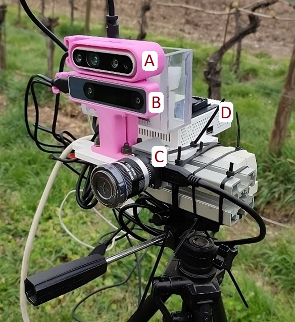
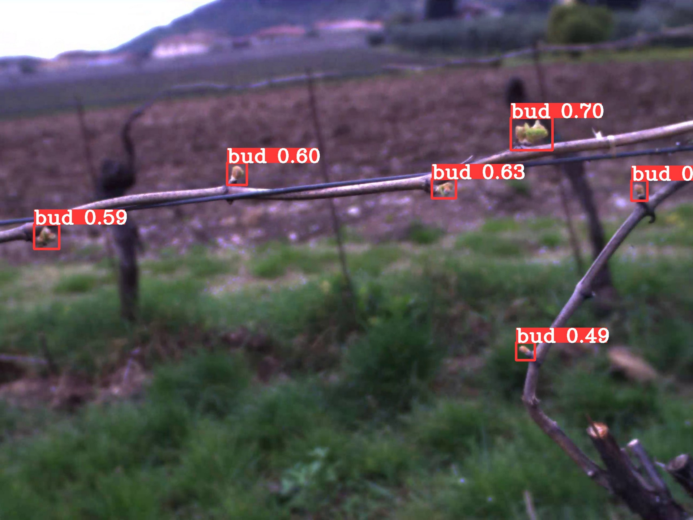
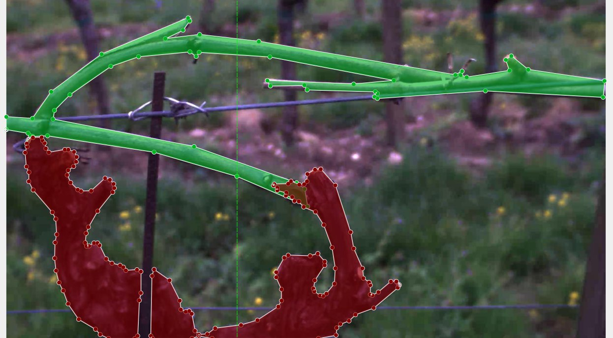
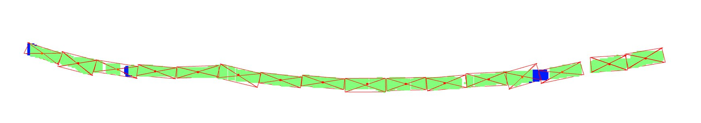
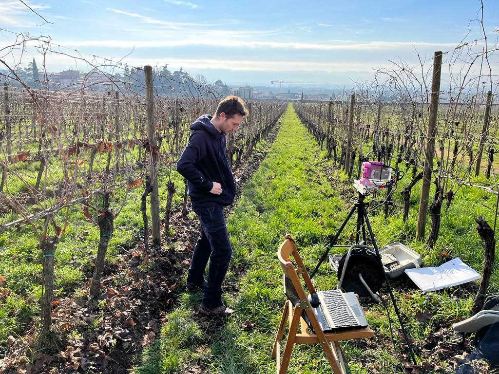

Mobile Multi-Sensor Embedded System for 3D Orchard Reconstruction
Problem: Accurate 3D orchard reconstruction is expensive and fragile in harsh field environments.
Method: Low-cost multi-sensor fusion (RGB-D, GNSS, IMU) with a custom SLAM approach tailored for agriculture.
Result: Validated 3D reconstructions and geometric measurements with edge-compatible acquisition workflows.
GitHub Repository: Hierarchy-Robust-SLAM

.png)
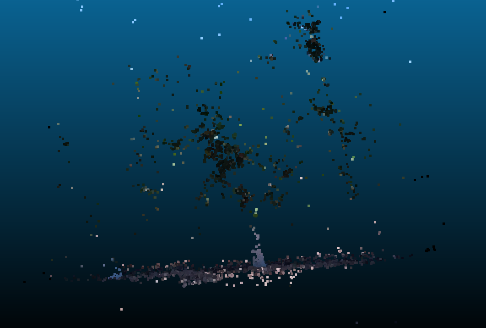

Vision Embedded System for Crop and Weed Recognition
Problem: Distinguishing crop from weed in real-time on agricultural machinery requires efficient onboard intelligence.
Method: Embedded computer-vision system using deep neural networks optimized for constrained edge hardware.
Result: Practical field-ready segmentation workflow to support precision agriculture operations.
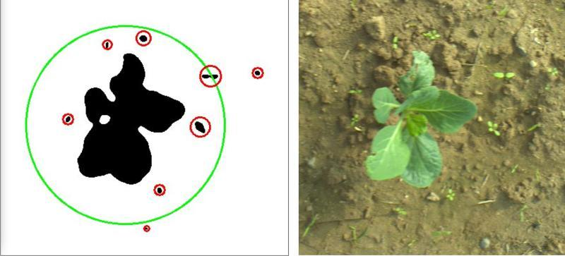
Gesture Recognition for Healthcare 4.0
Problem: Manual supervision of surgical handwashing is inconsistent and can increase infection risk.
Method: Vision-based hand and gesture recognition system with machine-learning analysis for procedure monitoring.
Result: Automated and objective assessment pipeline for handwashing compliance in clinical workflows.
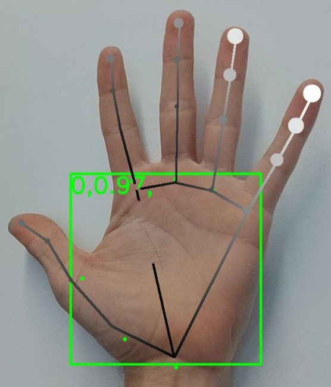
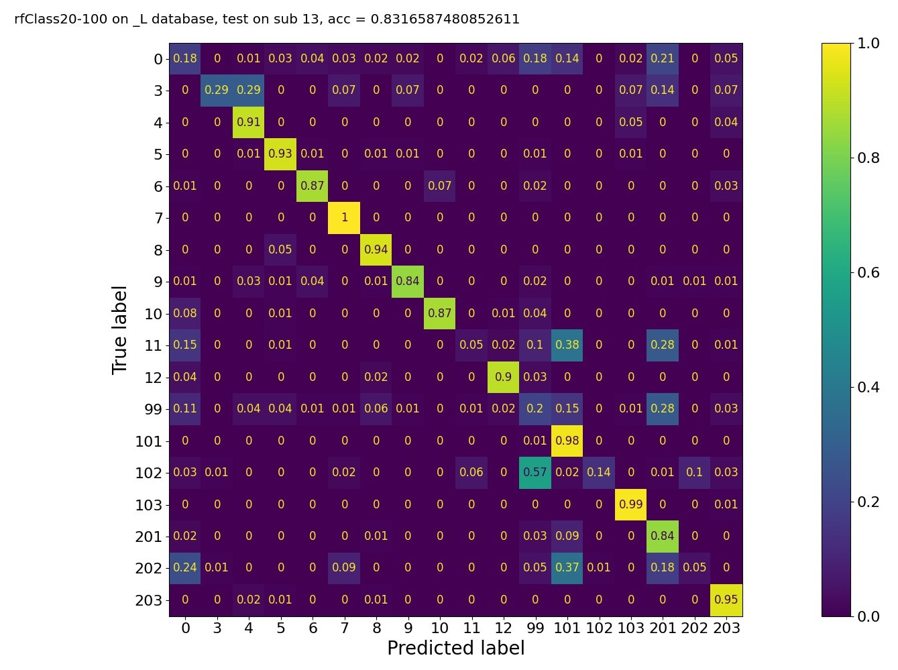
Vision System for Body and Gym Gesture Recognition
Problem: Reliable automatic recognition of exercise gestures is challenging in practical gym environments.
Method: Vision-based pose estimation and signal-processing pipeline for movement analysis and repetition evaluation.
Result: Functional smart-mirror prototype supporting real-time feedback for fitness training tasks.
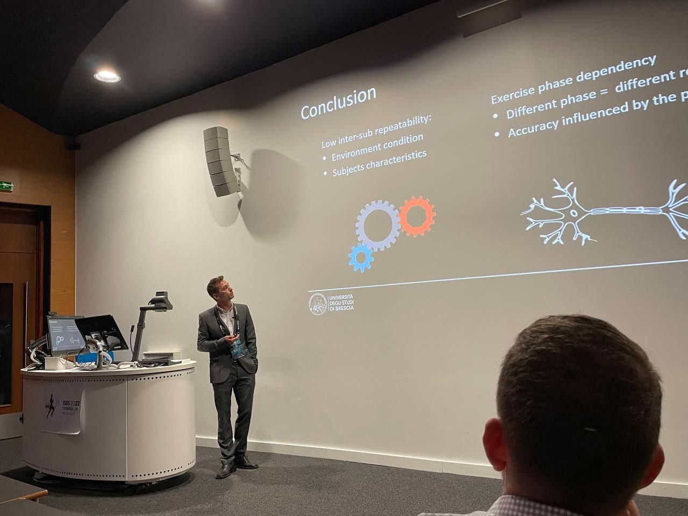
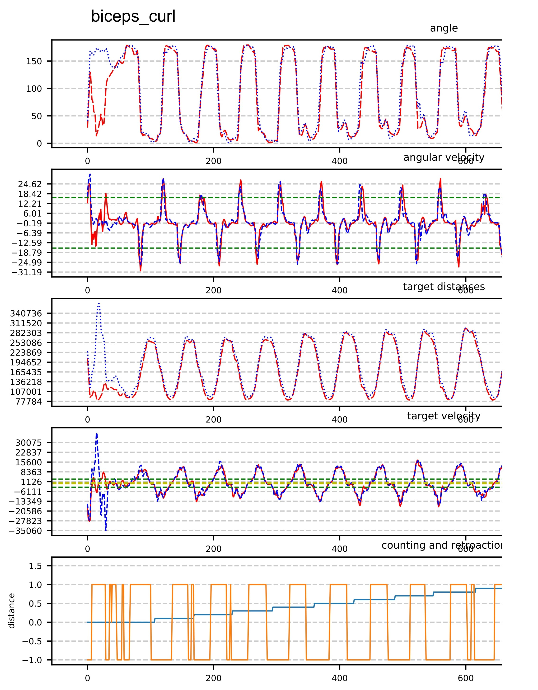